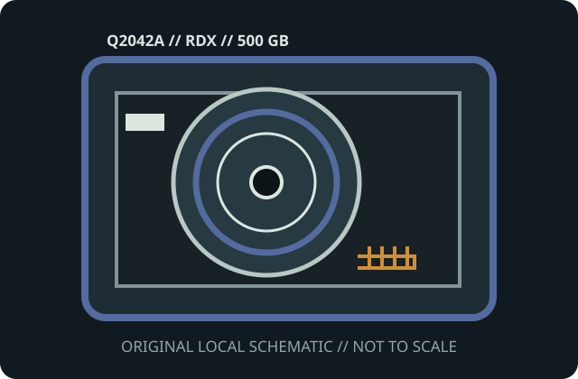

[ MODEL-SPECIFIC MEDIA // PRODUCT RECORD ]
HPE RDX 500 GB Removable Disk Cartridge (Q2042A)
This entry identifies the removable medium SKU, not its drive or dock. Confirm the exact model label, medium generation, host format and drive/dock compatibility before use.

IDENTIFICATION: HPE manufacturer SKU Q2042A; RDX removable disk cartridge, 500 GB-class 2.5-inch hard disk medium. Native capacity is distinguished from any data-dependent compression estimate.
Capacity, physical format and compatibility
| Manufacturer / SKU | HPE Q2042A |
|---|---|
| Medium / generation | RDX removable disk cartridge, 500 GB-class 2.5-inch hard disk medium; RDX cartridge model Q2042A; magnetic rotating disk in a rugged removable housing (not tape). |
| Native capacity | 500 GB nominal disk capacity; host-visible capacity depends on filesystem, partitioning and formatting. |
| Drive/dock compatibility | HPE RDX docking station or other qualified RDX dock that supports Q2042A; use the dock vendor’s model/OS matrix. Fits an RDX docking station that supports the RDX standard and the cartridge’s capacity; HPE and other RDX-branded docks are not USB cables for the cartridge itself. Confirm OS/dock firmware and vendor qualified device lists. |
| Physical medium | Rugged cartridge containing a 2.5-inch hard disk, with protective shell, keyed guide and dock-mating connector; dimensions and drop ratings are enclosure/model-specific. |
| Electrical interface | The cartridge’s internal disk uses a dock-mated SATA-style connection; it has no standalone USB port or power. USB/SATA host interface and power are provided by the RDX dock. |
| Format limits | This is block-addressable disk media, not sequential tape; dock, OS filesystem and host partition limits apply. Never force it into a non-RDX bay or eject while writes are active. |
Storage and preservation cautions
Avoid drops, shock, vibration while active, static discharge, liquids, dust, strong magnetic fields and temperature extremes. Use safe eject, verify the whole volume and checksums, and keep off-device backup copies; removable disks are not a one-copy archive.
- Do not force media into a drive/dock or use improvised cleaners, lubricants or repairs. Stop if the shell, connector, tape leader or disk enclosure is damaged.
- Preserve more than one independent copy, verify checksums after transfer, and document the drive/dock, firmware, OS and format used. Plan migration before compatible equipment is lost.
Manufacturer and archival sources
- HPE — RDX Removable Disk Cartridge QuickSpecsHPE manufacturer specification for RDX cartridge families, capacities and system compatibility.
- Quantum RDX technical datasheet (archival copy)RDX platform and cartridge/dock compatibility overview from the format vendor.
- Library of Congress — Care, Handling, and Storage of Audiovisual MaterialsArchival media handling guidance; apply additional disk-specific precautions.
Capacity labels, compressed ratings, and compatibility are model- and host-specific. Product references and exact drive/dock manuals take precedence over shell fit or a generic family name.